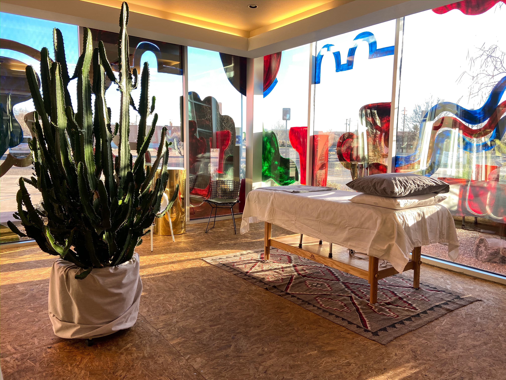

Hi, I'm Tessa!
I'm a creative esthetician with a passion for holistic skin care. I believe in providing guests with services that not only benefit their skin, but enhance their overall well-being.
Follow me on instagram @wellness.by.tessa for holistic skincare tips, product reviews, and inspirational self-care content.
 Book now
Book now
Services
Below you'll find my menu of all-natural facials and add-ons. Not sure which treatment is best for your skin? No worries! I will assess your skin's needs and customize the treatment and products especially for you.
Facials
|
Southwest Seasonal Facial Moisturizing + botanical facial that focuses on revealing your skin’s radiance, season by season.
|
75 minutes | $105 |
|
Shine On Facial Brightening facial that targets hyperpigmentation + fine lines.
|
60 minutes | $90 |
|
Lymphatic Drainage Facial Relaxing facial massage + dry brush techniques that eliminate toxins and encourage healthy, glowing skin.
|
60 minutes | $90 |
|
Bacial - A Facial for Your Back! A relaxing deep cleanse + exfoliation that targets your back, elbows, and back of upper arms.
|
60 minutes | $100 |
Add ons
|
Chemical peel A chemical exfoliation process that penetrates deeper in the skin in order for the top layers of the skin to start shedding. The skin that grows back after a chemical peel is smoother and younger looking. Chemical peels are used to treat wrinkles, discoloration, texture, and scars. |
$20 |
|
Dermaplaning A gentle skin resurfacing treatment that uses a special blade to remove dead skin cells and peach fuzz. Expect to see smoother, brighter skin. Great for maintaining an even, healthy glow. |
$25 |
|
Lip treatment Lip scrub, mask, and Dryland Wilds Balm. Like a mini-facial for your lips! |
$10 |
Cancellation Policy: You will need to have a credit card handy to book your appointment. You will be charged 50% of your full service price if you do not cancel or reschedule your appointment at least 24 hours before your appointment time.
Book nowAbout
Growing up in New Mexico I’ve learned to appreciate the natural beauty that surrounds us. The open skies, prickly pear cactus, and roadrunner bird are some of my favorite things about this place I call home.
Before becoming a licensed esthetician in 2020, I spent several seasons working amongst urban conservation groups, learning about the plant and wildlife species that support our communities.
Instead of working against the dry climate of the high-desert, I use natural botanical products from New Mexico that work with your skin to create a healthy, balanced ecosystem.
My goal is to nourish your skin and enhance your natural beauty while providing a moment of pause to relax + rejuvenate.
Drop by my treatment room at Spurline Supply Co.800 20th Street NW
Albuquerque, New Mexico 87104
